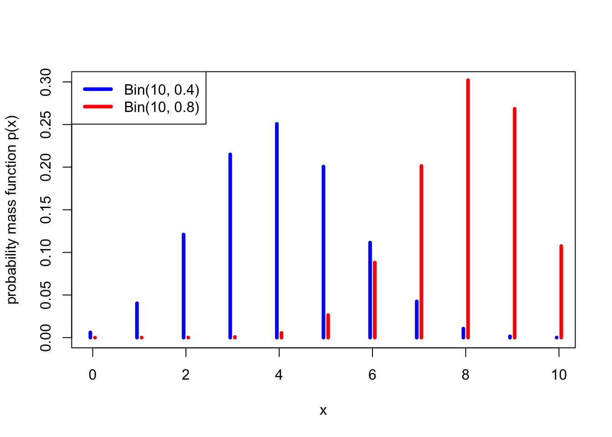
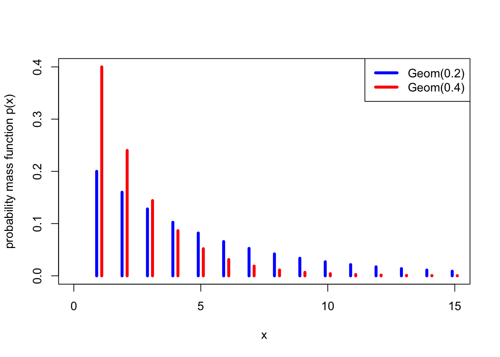

Section 6 Discrete distributions
In the last section, we developed the idea of random variables, and in particular discrete random variables. We saw that the benefit of random variables is that we can just worry about their distribution, which often allows us to move the sample space \(\Omega\) and other more technical matters into the background. (Here, we informally use the word “distribution” to refer to the probability mass function of a random variable – or, later, the continuous equivalent, the probability density function).
There are some distributions – or, rather, some families of distributions – that are so useful that we often want to use them for modelling real-world quantities. In this section, we will look at a number of useful discrete distributions.
6.1 Binomial distribution
One family of distributions we have already seen is the Bernoulli trial \(\text{Bern}(p)\), which is 1 with probability \(p\) and 0 with probability \(1-p\). We saw that this could model whether or a biased coin lands Heads, or more generally whether an experiment is successful.
Example 6.1 Suppose we toss 10 independent biased coins, each of which lands Heads with probability 0.7 and Tails with probability 0.3. What is the probability we get exactly 8 Heads altogether?
The probability that any specific 8 coins land Heads and the other 2 land Tails is \(0.7^8\times 0.3^2\). However, there are \(\binom{10}{8}\) choices for which 8 coins are the ones that land Heads. Hence, the probability is \[ \mathbb P(\text{8 Heads}) = \binom{10}{8} \times 0.7^8 \times 0.3^2 = 0.23.\]
This is a special case of the binomial distribution.
Definition 6.1 Let \(X\) be a discrete random variable with range \(\{0,1,2,\dots,n\}\) and PMF \[ p(x) = \binom{n}{x} p^x (1-p)^{n-x} . \] Then we say that \(X\) follows the binomial distribution with parameters \(n\) and \(k\), and write \(X \sim \text{Bin}(n,p)\).
So a binomial random variable represents the number of successes in \(n\) Bernoulli trials. In our previous example, the number of Heads from the coin tosses was \(\text{Bin}(10, 0.7)\).

Theorem 6.1 Let \(X \sim \text{Bin}(n, p)\). Then
- \(\mathbb EX = np\),
- \(\operatorname{Var}(X) =np(1-p)\).
You can prove this by working out the sums by hand – for example, the expectation is the value of the sum \[ \mathbb EX = \sum_{x=0}^n x \binom{n}{x} p^x (1-p)^{n-x} . \] However, in next section we will see an easier way, so we’ll reserve the proof until then.
So for my 10 biased coins, that are each Heads with probability \(0.7\), the expectation and variance are \[\begin{align*} \mathbb EX &= 10 \times 0.7 = 7 \\ \operatorname{Var}(X) &= 10 \times 0.7 \times 0.3 = 2.1 \end{align*}\]
6.2 Geometric distribution
Example 6.2 I decide to roll a fair dice until I first roll a six, and then stop. What’s the probability I get the first six on my 5th roll of the dice?
For the first six to be on the 5th attempt, the first 4 rolls have to be non-sixes, and then the fifth roll has to be a six. This has probability \[ \left(\tfrac56\right)^4 \times \tfrac16 = \tfrac{625}{7776} = 0.08.\]
This is a special case of the geometric distribution.
Definition 6.2 Let \(X\) be a discrete random variable with range \(\{1,2,\dots\}\) and PMF \[ p(x) = (1-p)^{x-1}p . \] Then we say that \(X\) follows the geometric distribution with parameter \(p\), and write \(X \sim \text{Geom}(p)\).
So a geometric random variable represents the number Bernoulli trials until the first success. In our previous example, the number of dice rolls until a six was \(\text{Geom}(\frac16)\).

Theorem 6.2 Let \(X \sim \text{Geom}(n, p)\). Then
- \(\mathbb EX = \displaystyle\frac1p\),
- \(\operatorname{Var}(X) = \displaystyle\frac{1-p}{p^2}\).
So the expected number of rolls until rolling a six is \[ \mathbb EX = \frac{1}{\frac16} = 6 , \] with variance \[ \operatorname{Var}(X) = \frac{1 - \frac16}{\big(\frac16\big)^2} = 30 . \]
Proof. (Non-examinable) For the expectation, we want to calculate \[ \mathbb EX = \sum_{x=1}^\infty x (1-p)^{x-1} p = p \sum_{x=0}^\infty x (1-p)^{x-1}. \] (We can include the \(x = 0\) term in the sum since it is equal to 0.)
At this point we will invoke the identity \[ \sum_{x = 0}^\infty x a^{x-1} = \frac{1}{(1-a)^2} , \] which can be proved by differentiating the standard sum of a geometric progression \[ \sum_{x = 0}^\infty a^x = \frac{1}{1 - a} \] with respect to \(a\).
Using that identity with \(a = 1-p\), we get \[ \mathbb EX = p \sum_{x=0}^\infty x (1-p)^{x-1} = p\, \frac{1}{\big(1 - (1-p)\big)^2} = \frac{1}{p} , \] as required.
For the variance, we will use a trick that sometimes comes in useful, which is to start by calculating \(\mathbb EX(X-1)\). Here we get \[ \mathbb EX(X-1) = \sum_{x=1}^\infty x (x-1) (1-p)^{x-1} p = p(1-p) \sum_{x=0}^\infty x(x-1) (1-p)^{x-2} . \] To calculate the sum, we note that differentiating the geometric progression formula twice gives \[ \sum_{x = 0}^\infty x(x-1) a^{x-2} = \frac{2}{(1-a)^3} , \] so we get \[ \mathbb EX(X-1) = p(1-p) \sum_{x=0}^\infty x(x-1) (1-p)^{x-2} = p(1 -p) \, \frac{2}{p^3} = \frac{2(1-p)}{p^2} . \]
We now want to use the computational formula \(\operatorname{Var}(X) = \mathbb EX^2 - \mu^2\) to get the variance. We know \(\mu = 1/p\), and from the calculation above, we have \[ \mathbb EX(X-1) = \mathbb EX^2 - \mathbb EX = \mathbb EX^2 - \frac{1}{p} = \frac{2(1-p)}{p^2} . \] So \[\begin{align*} \operatorname{Var}(X) = \mathbb EX^2 - \mu^2 &= \left(\frac{2(1-p)}{p^2} + \frac{1}{p}\right) - \left(\frac{1}{p}\right)^2 \\ &= \frac{2(1-p) + p - 1}{p^2} \\ &= \frac{1-p}{p^2} . \end{align*}\]
Note: Here, we defined a geometric random variable as being the number of trials up to and including the first success, which is a number in \(\{1, 2, \dots\}\). However, some authors define it as the number of failures before the first success, which is a number in \(\{0, 1, 2,\dots\}\). If \(X\) is our definition and \(Y\) is the second “number of failures” definition, then \(X\) and \(Y+1\) have the same distribution. Annoyingly, R uses the “number of failures” definition, as we will discuss in a later R worksheet.
6.3 Poisson distribution
Another important distribution is the Poisson distribution. The Poisson distribution (roughly “pwa-song”) is typically used to model “the number of times something happens in a set period of time”. For example, the number of emails you receive in a day; the number of claims at an insurance company each year; or the number of calls to call centre in one hour. (Famously, one of the first historical datasets modelled using a Poisson distribution was “the number of Prussian soldiers in different cavalry units kicked to death by their horse between 1875 and 1894”.) We’ll explain why the Poisson distribution is a good model for this in the next subsection.
Definition 6.3 Let \(X\) be a discrete random variable with range \(\{0,1,2,\dots\}\) and PMF \[ p(x) = \mathrm e^{-\lambda} \frac{\lambda^x}{x!} . \] Then we say that \(X\) follows the Poisson distribution with rate \(\lambda\), and write \(X \sim \text{Po}(\lambda)\).
I should note that we interpret \(0! = 1\), so \[ p(0) = \mathrm e^{-\lambda} \frac{\lambda^0}{0!} = \mathrm e^{-\lambda} \frac{1}{1} = \mathrm e^{-\lambda} . \]

The Poisson distribution is named after the French mathematician Siméon-Denis Poisson who wrote about it in 1837, although the origin of the idea is more than 100 years earlier with another French mathematician, Abraham de Moivre.
Example 6.3 An insurance company receives large insurance claims of over £100,000 at a rate of \(\lambda = 1.2\) per day, modelled as a Poisson distribution and independent between days. What’s the probability that in a week (5 days) they get at least one large claim every day?
Let \(X \sim \text{Po}(\lambda)\) be the number of large claims received in a day. Then the probability there is at least one claim in a day – which is an “at least one” question, suggesting we look at the complement – is \[ \mathbb P(X \geq 1) = 1 - \mathbb P(X = 0) = 1 - \mathrm e^{-1.2} \frac{1.2^0}{0!} = 1 - \mathrm e^{-1.2} =0.699 . \]
Since it’s assumed that days are independent, the probability there is at least one large claim all 5 days is \[ \mathbb P(X \geq 1)^5 = 0.699^5 = 0.167, \] or about 17%.
The parameter \(\lambda\) is called the “rate” because that indeed the number of emails (or insurance claims, or phone calls, or deaths by horse-kicking) that we expect to see.
Theorem 6.3 Let \(X \sim \text{Po}(\lambda)\). Then
- \(p(x)\) is indeed a PMF, in that \(\displaystyle\sum_{x=0}^\infty p(x) = 1\).
- \(\mathbb EX = \lambda\),
- \(\operatorname{Var}(X) = \lambda\).
Proof. We’ll do the first two here, then you can do the variance in Problem Sheet 4.
It will be useful to remember the Taylor series for the exponential function, \[ \mathrm e^\lambda = \sum_{x=0}^\infty \frac{\lambda^k}{x!} . \]
To see that the PMF does indeed sum to one, note that the Taylor series gives us \[ \sum_{x=0}^\infty p(x) = \sum_{x=0}^\infty \mathrm e^{-\lambda} \frac{\lambda^x}{x!} = \mathrm e^{-\lambda} \sum_{x=0}^\infty \frac{\lambda^x}{x!} = \mathrm e^{-\lambda}\,\mathrm e^{\lambda} = 1. \]
For the expectation, we have \[\begin{align*} \mathbb EX &= \sum_{x=0}^\infty x\,\mathrm e^{-\lambda} \frac{\lambda^x}{x!} \\ &= \mathrm e^{-\lambda} \sum_{x=1}^\infty x\,\frac{\lambda^x}{x!} \\ &= \mathrm e^{-\lambda} \sum_{x=1}^\infty \frac{\lambda^x}{(x-1)!} \\ &= \lambda \mathrm e^{-\lambda} \sum_{x=1}^\infty \frac{\lambda^{x-1}}{(x-1)!} \end{align*}\] In the second line, we took \(\mathrm e^{-\lambda}\) outside the sum, and allowed ourselves to start the sum from 1, since the \(x = 0\) term was 0 anyway; in the third line, we cancelled the \(x\) from the \(x!\) to get \((x-1)!\); and in the fourth line we took one of the \(\lambda\)s in \(\lambda^x\) outside the sum, to give ourselves terms in \(x - 1\) inside the sum. We can now “re-index” the sum by putting \(y = x - 1\), to get \[ \mathbb EX = \lambda \mathrm e^{-\lambda} \sum_{y=0}^\infty \frac{\lambda^{y}}{y!} = \lambda \mathrm e^{-\lambda} \mathrm e^{\lambda} = \lambda , \] where we used the Taylor series again.
6.4 Poisson approximation to the binomial
Suppose I own a watch shop in Leeds. My watches are very expensive, so I don’t need to sell many each day – in fact, I sell an average of 4.8 watches per day. How should I model the number of watches sold each day as a random variable?
One way could be to say this. There are \(n\) people living in Leeds or nearby, and, on any given day, each of them will independently buy a watch from my shop with probability \(p\). Thus the total number of watches I sell could be modelled as a binomial distribution \(\text{Bin}(n, p)\).
But what should \(n\) and \(p\) be? To make the average \(\mathbb EX = np = 4.8\), I should take \(p = 4.8/n\). But what about \(n\)? We know \(n\) is a very big number, because Leeds is a big city, so let’s take a limit as \(n \to \infty\). It turns out, that this distribution \(\text{Bin}(n, 4.8/n)\) becomes a Poisson(4.8) distribution!
Theorem 6.4 Fix \(\lambda \geq 0\), and let \(X_n \sim \text{Bin}(n, \lambda/n)\) for all integers \(n \geq \lambda\). Then \(X_n \to \text{Po}(\lambda)\) in distribution as \(n \to infty\), by which we mean that if \(Y \sim \text{Po}(\lambda)\), then \[ p_{X_n}(x) \to p_Y(x) \qquad \text{for all $x \in \{0, 1, \dots \}$}. \]
A looser way to state the principle of this theorem would be this: When \(n\) is very large and \(p\) very small, in such a way that \(np\) is a small-ish number, then \(\text{Bin}(n,p)\) is well approximated by \(\text{Po}(\lambda)\) where \(\lambda = np\).
This is why a Poisson distribution is a good model for the number of occurrences in a set time period. It applies if there lots of things that could happen (large \(n\)), each one is individually unlikely (small \(p\)), and on average a few of them will actually happen (\(\lambda = np\) small-ish).
Example 6.4 A lecturer teaches a module with \(n = 100\), and estimate that each student turns up to office hours drop-in sessions independently with probability \(p = 0.035\). What is the probability that (a) exactly 5, (b) 2 or more students turn up to a drop-in session?
If we let \(X\) be the number of students that turn up to a drop-in session, then the exact distribution of \(X\) is \(X \sim \text{Bin}(100, 0.035)\).
For part (a), we then have \[ \mathbb P(X = 5) = \binom{100}{5} 0.035^5 (1 - 0.035)^{100-5} = 0.134 . \]
For part (b), we use the complement rule to get \[\begin{align*} \mathbb P(X \geq 2) &= 1 - \mathbb P(X = 0) - \mathbb P(X = 1) \\ &= 1 - \binom{100}{0} 0.035^0 (1 - 0.035)^{100-0} + \binom{100}{1} 0.035^1 (1 - 0.035)^{100 - 1} \\ &= 1 - (1 - 0.035)^{100} + 100 \times 0.035 (1 - 0.035)^{99} \\ &= 1 - 0.028 - 0.103 \\ &= 0.869 \end{align*}\]
Alternatively, it might be more convenient to approximate \(X\) by a Poisson distribution \(Y \sim \text{Po}(100 \times 0.035) = \text{Po}(3.5)\).
For part (a), this gives \[ \mathbb P(Y = 5) = \mathrm e^{-3.5} \frac{3.5^5}{5!} = 0.132 , \] which is very close to the exact answer above of \(0.134\).
For part (b), the approximation gives \[\begin{align*} \mathbb P(Y \geq 2) &= 1 - \mathbb P(Y = 0) - \mathbb P(Y = 1) \\ &= 1 - \mathrm e^{-3.5} \frac{3.5^0}{0!} - \mathrm e^{-3.5} \frac{3.5^1}{1!} \\ &= 1 - \mathrm e^{-3.5} - 3.5 \mathrm e^{-3.5} \\ &= 1 - 0.030 - 0.106 \\ &= 0.864 \end{align*}\] which is very close to the exact answer above of \(0.869\).
The following graph shows how close the \(\text{Po}(3.5)\) distribution is to a \(\text{Bin}(100, 0.035)\) distribution – not exact, but pretty good.

For completeness, we include a proof of Theorem 6.4 here, although since it discusses use of limits, it’s not examinable material for this module.
Proof. (Non-examinable) We need to show that, as \(n \to \infty\), \[ \binom nx \left(\frac{\lambda}{n}\right)^x \left(1 - \frac{\lambda}{n}\right)^{n-x} \to \mathrm{e}^{-\lambda} \frac{\lambda^x}{x!} . \] Let’s try! The left-hand side is \[\begin{align*} \binom nx &\left(\frac{\lambda}{n}\right)^x \left(1 - \frac{\lambda}{n}\right)^{n-x} \\ &= \frac{n(n-1)\cdots(n-x+1)}{x!} \frac{\lambda^x}{n^x} \left(1 - \frac{\lambda}{n}\right)^{n}\left(1 - \frac{\lambda}{n}\right)^{-x} \\ &= \frac{\lambda^x}{x!} \frac{n(n-1)\cdots(n-x+1)}{n^x} \left(1 - \frac{\lambda}{n}\right)^{n}\left(1 - \frac{\lambda}{n}\right)^{-x} \\ &= \frac{\lambda^x}{x!} \frac{n}{n} \frac{n-1}{n} \cdots \frac{n-x+1}{n} \left(1 - \frac{\lambda}{n}\right)^{n}\left(1 - \frac{\lambda}{n}\right)^{-x} \\ &= \frac{\lambda^x}{x!} 1 \left(1 - \frac{1}{n}\right) \cdots \left(1 - \frac{x-1}{n}\right) \left(1 - \frac{\lambda}{n}\right)^{n}\left(1 - \frac{\lambda}{n}\right)^{-x} . \end{align*}\]
We take each of the terms in turn. First \(\lambda^x / x!\) looks very promising, and can stay. Second, each of the terms \(1, 1 - 1/n, \dots, 1 - (x-1)/n\) tend to 1 as \(n \to \infty\). Third, \[ \left(1 - \frac{\lambda}{n}\right)^{n} \to \mathrm{e}^{-\lambda} ; \] this is from a standard result that \[ \left(1 + \frac{a}{n}\right)^{n} \to \mathrm{e}^{a} \qquad \text{as $n \to \infty$}. \] Finally \[\left(1 - \frac{\lambda}{n}\right)^{-x} \to 1 , \] as \(1 - \lambda/n \to 1\), and \(x\) is fixed. Putting all that together gives the result.
6.5 Distributions as models for data
Before finishing this section, I want to say a bit more about using these families of distributions as models for data. This is a preview of the Bayesian statistics we will discuss in Section 10 of this module, and previews an idea that is extremely important throughout the whole MATH1712 Probability and Statistics II.
The families of distributions we have looked at here are sometimes called “parametric families”, in that each of the distributions depended on one or more parameters: \(p\) for the Bernoulli and geometric distributions; \(\lambda\) for the Poisson distribution; and both \(n\) and \(p\) for the binomial distribution. (Later in the module we will also see some continuous parametric families: the exponential, normal and beta distributions.) This means we can adopt a model that data comes from a family, then use the data to estimate that parameter.
For example:
- You might assume that the number of emails you receive each day Poisson distributed with some unknown rate \(\lambda\). You can then collect some data about how many emails you received each day for some large number of days, and use this data to estimate the value of \(\lambda\).
- A tutor might assume that the number of students that turn up to each tutorial is binomially distributed where \(n\) is known to be 12, but \(p\) is unknown. The tutor could then take records of how many students turned up to all the tutorials, and use this to estimate \(p\).
There are two main methods statisticians use to estimate parameters:
- Frequentist statistics: Here, one seeks a parameter that makes the data that was actually seen very likely. For example, if the mean number of emails you received per day is \(\bar x\), then this suggests that taking \(\lambda = \bar x\), which leads to the expected number of emails being \(\bar x\) also, could be a good estimate. The frequentist approach will pursued in detail in MATH1712.
- Bayesian statistics: Here, one starts with a “prior” distribution for the parameters, which represents one’s belief about which possible values for that parameter are more or less likely. One then uses Bayes’ theorem to update that belief to a “posterior” distribution of one’s beliefs about the parameter given the data. The Bayesian approach will be introduced in Section 10 of these notes, and there will be the opportunity to pursue this further later in your university career.
Summary
| Distribution | Range | PMF | Expectation | Variance |
|---|---|---|---|---|
| Bernoulli: \(\text{Bern}(p)\) | \(\{0,1\}\) | \(p(0) = 1- p\), \(p(1) = p\) | \(p\) | \(p(1-p)\) |
| Binomial: \(\text{Bin}(n,p)\) | \(\{0,1,\dots,n\}\) | \(\displaystyle\binom{n}{x} p^x (1-p)^{n-x}\) | \(np\) | \(np(1-p)\) |
| Geometric: \(\text{Geom}(p)\) | \(\{1,2,\dots\}\) | \((1-p)^{x-1}p\) | \(\displaystyle\frac{1}{p}\) | \(\displaystyle\frac{1-p}{p^2}\) |
| Poisson: \(\text{Po}(\lambda)\) | \(\{0,1,\dots\}\) | \(\mathrm{e}^{-\lambda} \displaystyle\frac{\lambda^x}{x!}\) | \(\lambda\) | \(\lambda\) |